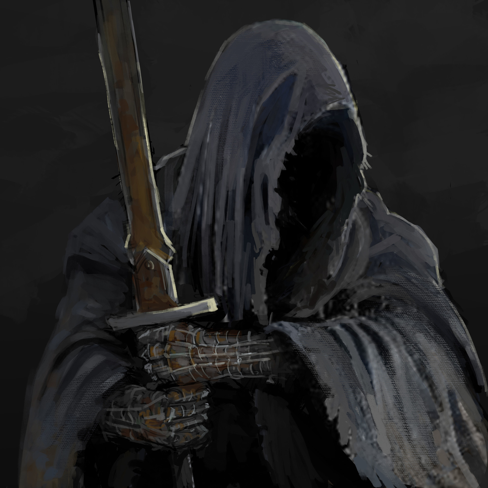

Ficha Pelicula
Las Dos Torres

Ficha Tecnica
| Campo | Informacion |
|---|---|
| Dirección | Peter Jackson |
| Producción |
Peter Jackson Barrie M. Osborne Fran Walsh |
| Guión |
Peter Jackson Fran Walsh Philippa Boyens |
| Basada en | La Comunidad del Anillo de J.R.R. Tolkien |
| Música | Howard Shore |
Otra Informacion
| Campo | Informacion |
|---|---|
| País | Nueva Zelanda |
| Año |
Peter Jackson Barrie M. Osborne Fran Walsh |
| Guión |
Peter Jackson Fran Walsh Philippa Boyens |
| Basada en | La Comunidad del Anillo de J.R.R. Tolkien |
| Música | Howard Shore |
Pelicula
Información
El Señor de los Anillos: las dos torres (título original en inglés: The Lord of the Rings: The Two Towers) es una película basada en el segundo tomo de la novela El Señor de los Anillos, del escritor británico J. R. R. Tolkien. Es la secuela de La Comunidad del Anillo y precede a la última entrega de la serie, El retorno del Rey.
Fue dirigida por el director neozelandés Peter Jackson y escrita por él mismo, junto con su esposa Fran Walsh y Philippa Boyens. Los actores aportaron ideas durante el rodaje, hecho que, junto con las protestas de los fanes por informaciones filtradas en Internet, hizo que el guion sufriera numerosas modificaciones.3 El rodaje tuvo lugar en Nueva Zelanda entre los años 1999 y 2000.
La trama de la película comienza tras la disolución de la Compañía del Anillo. Boromir ha muerto a manos del jefe de los uruk-hai, Lurtz, en un intento de salvar a los hobbits Meriadoc Brandigamo y Peregrin Tuk, que acaban siendo capturados. Frodo Bolsón y Sam Gamyi parten solos hacia Mordor para destruir el Anillo Único en el Monte del Destino, mientras que Aragorn, Gimli y Legolas persiguen a los uruks con el fin de liberar a sus amigos capturados.
Las dos torres se estrenó el 18 de diciembre de 20025 y recibió en general buenas críticas, convirtiéndose en la película con mayor recaudación en taquilla del año 2003: 924,7 millones de dólares.6 Tan sólo en su primer día, Las dos torres recaudó 42 millones de dólares (26 millones en Estados Unidos y 16 millones en otros ocho países), el doble que La Comunidad del Anillo.
En carteles oficiales y otros productos, Jackson decidió usar como torres a Orthanc y Barad-dûr, las dos torres del mal, aunque Tolkien nunca dejó claro de cuáles se trataban. En una carta dirigida a Stanley Unwin, presidente por aquel entonces de la editorial encargada de la publicación de El Señor de los Anillos, George Allen & Unwin, Tolkien decía que la identidad de las torres quedaba en la ambigüedad, pues podría referirse tanto a Orthanc y Barad-dûr (las dos torres relacionadas con el enemigo), como a Minas Tirith y Barad-dûr (las dos torres más poderosas de cada bando) o a Orthanc y Cirith Ungol (las dos torres que aparecen en los últimos pasajes de los libros III y IV del tomo).